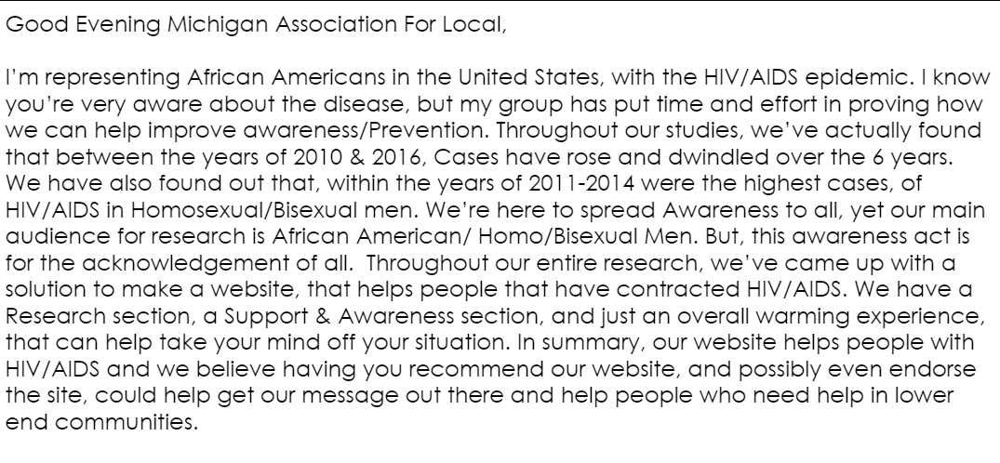
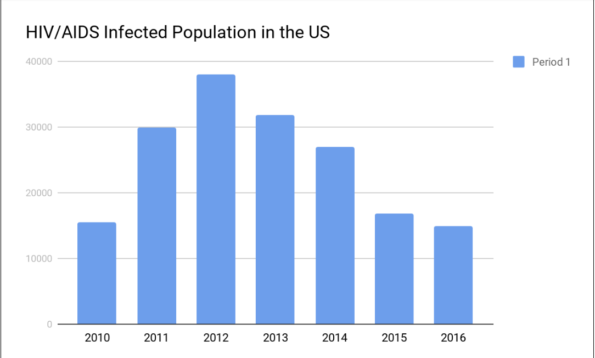

Letter by Aaron Harvey
For the math component, we had to find statistical evidence on our disease and write a letter to a public health official about it advocating for our design to have an impact on HIV/Aids(Letter found above). When we were creating the letter, we also went into depeer statistical data on people affected by our disease. We did research on LGBTQ+ men and found out that the rate of how many people obtaining the disease is quadratic over the years 2010 - 2016. Having the disease go down is good and needed(Graph found below).

Graph by Jabari Cook
From the graph, we learned that aids is quadratic and has gone below the radar for most people but is still a disease worth fighting. Our math solution is to write a letter to a public health official advocating for our prototype.